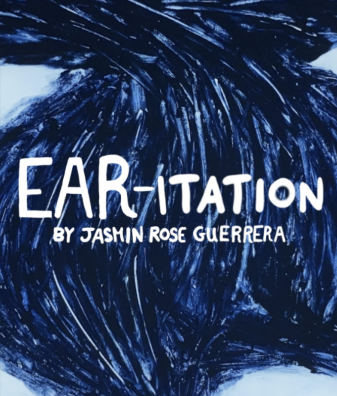

Ear-itation
Synopsis
An experimental audio-visual experience showing the different parts and various functions of the human ear.
Credits
- Supervised by Sandra Eber and Catherine Slilaty
- Sound Mix by Tim Horlor

Duration: 1 minute
Director: Jasmin Rose Guerrera
Year: 2021
Production Process
1. Research
Researching the dfferent parts of the ear was essential. This mostly included the ear canal, the vestibular system and the eardrum.
2. Undercamera Setup
After placing the light table and setting up the tripod. Paper was measured and carefully placed onto the light table for the animation process to commence.
3. Animation
Every scene was drawn using orange and blue pastels. After each drawing was photographed, vaseline and Q-tips were used to erase the image and begin a new one.
Budget
Materials and Software Used
- Used iPad Pro 12.9 inch $900
- Laptop Macbook Pro 2019 $1000
- Light table and Mini Tripod $60
- Dragon Frame $408
- Adobe Premiere Pro $29.99/month (5 months=$150)
- Audacity, freesound.org and Voice Record Pro FREE
- Pro Tools $129
- Used Pastels (Garage Sale) $5
- Paper, Vaseline and Q-tips $45
Hardware
Animating and Editing Software
Audio Software
Miscellaneous Materials
Total Cost: CAD $2697
Production Labour
- Storyboarding and animatic (12 hours)
- Udercamera Setup (1 hour)
- Pastel Animation (152 hours)
- Title and subtitles (5 hours)
- Finding sounds (28 hours)
- Sound editing (17 hours)
- Sound mix (1 hour)
Media Prep
Animating
Audio
Total Labour: 216 hours
Film Festival Appearances
- Festival RENUAC
- International Inter University Short Film Festival
Film Stills